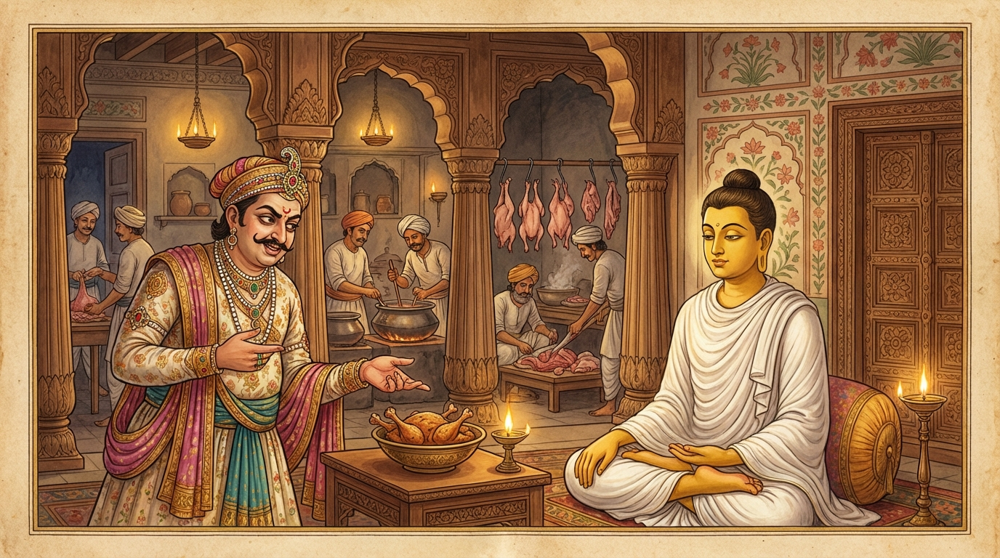

6. තේලෝවාද ජාතකය (246)
‘හන්ත්වා ඡෙත්වා වධිත්වා ච’ යනුවෙන් ඇරඹෙන මෙම ධර්ම දේශනාව බුදුරජාණන් වහන්සේ විශාලා මහනුවර ඇසුරු කොට කූටාගාර ශාලාවෙහි වැඩවාසය කරන සමයේ සීහ සේනාධිපති අරබයා වදාළ සේක. හෙතෙම බුදුරජාණන් වහන්සේ සරණ ගොස්, ආරාධනා කොට, දෙවන දිනයේ මස් සහිත දානයක් පූජා කළේය. නිගණ්ඨයෝ ඒ අසා කිපී, නොසතුටු සිත් ඇතිව, තථාගතයන් වහන්සේට හිරිහැර කරනු කැමතිව, “ශ්රමණ ගෞතමයන් වහන්සේ තමන් උදෙසා සකස් කළ බව දැන දැන මස් අනුභව කරති” යි ආක්රෝෂ පරිභව කළහ. භික්ෂූන් වහන්සේලා ධර්ම සභාවෙහි, “ඇවැත්නි! නිගණ්ඨනාථ පුත්රයා ‘ශ්රමණ ගෞතමයන් වහන්සේ තමන් උදෙසා සකස් කළ බව දැන දැන මස් වළඳති’ යි කියමින් දොස් පවරමින් පිරිස සමඟ ඇවිදියි” යනුවෙන් කථාවක් මතු කළහ. ඒ අසා බුදුරජාණන් වහන්සේ, “මහණෙනි, නිගණ්ඨනාථ පුත්රයා මා උදෙසා කළ මස් කෑමෙන් මට ගැරහුවේ දැන් පමණක් නොවේ; පෙරත් ගැරහුවේය” යි වදාරා අතීත කථාව ගෙනහැර දැක්වූ සේක.
පෙර බරණැස් නුවර බ්රහ්මදත්ත රජු රාජ්ය කරන සමයේ අප මහා බෝධිසත්වයන් වහන්සේ බ්රාහ්මණ කුලයෙහි ඉපදී, වැඩිවියට පත්ව, තාපස පැවිද්දෙන් පැවිදිව, ලුණු ඇඹුල් සෙවීම පිණිස හිමාල වනයේ සිට බරණැස් නුවරට පැමිණ, දෙවන දවසේ නගරයට පිඬු පිණිස පිවිසියහ. ඉක්බිති එක් කෙළෙඹි පුත්රයෙක් “තාපසයා වෙහෙසට පත් කරමි” යි සිතා, නිවසට කැඳවාගෙන විත් පනවන ලද අසුනක හිඳුවා, මස් මාංශ සහිත බොජුන් වළඳවා, භෝජන කෘත්යය අවසානයේ එක් පසෙක හිඳගෙන, “මේ මස් නුඹවහන්සේ උදෙසාම සතුන් මරා සකස් කරන ලද්දකි. මේ අකුසලය මට පමණක් නොවේවා! නුඹවහන්සේටත් වේවා!” යි පවසා පළමු ගාථාව පැවසීය.

“දුසිල් පුද්ගලයා පහර දී, ක්ලාන්ත කරවා, මරා දන් දෙයි ද, එබඳු දන් වළඳන තැනැත්තා පාපයෙන් තැවරෙයි.”
යනුවෙන් පළමු ගාථාව කීය.
එහි අර්ථය මෙසේය: හන්ත්වා යනු ගසා පහර දීමයි. ඡෙත්වා යනු (තැලීමෙන්) ක්ලාන්ත කිරීමයි. වධිත්වා යනු ජීවිතක්ෂයට පත් කිරීමයි (මැරීමයි). දෙති දානං අසඤ්ඤතො යනු සංයමයක් නැති දුසිල් පුද්ගලයා මෙසේ කොට දන් දීමයි. එදිසං භත්තං භුඤ්ජමානො ස පාපෙන උපලිප්පති යනු තමා උදෙසා පිළියෙල කළ බව දැන දැන මෙබඳු (මස් සහිත) බත් අනුභව කරන ඒ ශ්රමණයා ද පාපයෙන් තැවරෙයි හෙවත් පාපයට එක් වෙයි.
ඒ අසා බෝධිසත්වයන් වහන්සේ දෙවන ගාථාව දේශනා කළ සේක.
“දුසිල්වූ තැනැත්තා තම අඹුදරුවන් පවා මරා දන් දෙයි ද, එය වළඳන නුවණැති තැනැත්තා පාපයෙන් නොතැවරෙයි.”
යනුවෙන් දෙවන ගාථාව වදාළ සේක.
එහි භුඤ්ජමානොපි සප්පඤ්ඤො යන්නෙහි අදහස මෙයයි: අන් සතෙකුගේ මස් කීම කවරේද, අඹුදරුවන් මරා හෝ දුසිල් පුද්ගලයා විසින් දෙනු ලබන දානය, ඉවසීම හා මෛත්රිය ආදී ගුණධර්මයන්ගෙන් යුත් නුවණැති පුද්ගලයා වැළඳුවත් ඔහු පාපයෙන් නොතැවරෙන්නේය. මෙසේ ඔහුට බෝධිසත්වයන් වහන්සේ දහම් දෙසා ආසනයෙන් නැගිට වැඩම කළ සේක.
බුදුරජාණන් වහන්සේ මෙම ධර්ම දේශනාව ගෙනහැර දක්වා ජාතක කථාව නිමවා වදාළ සේක. “එකල ඒ කෙළෙඹි පුත්රයා වූයේ නිගණ්ඨනාථ පුත්රයා ය. තාපසයා වූයේ මම ම ය” යි වදාළ සේක.
හයවන වූ බාලොවාද ජාතක වර්ණනාව නිමාවිය.